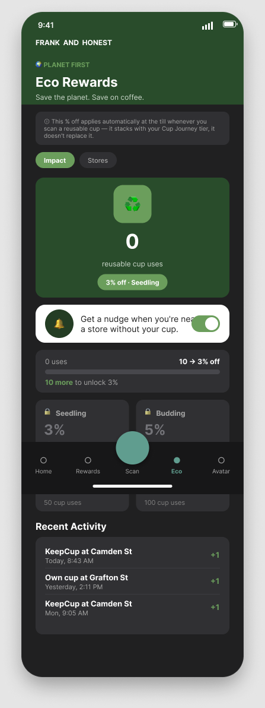

Musgrave · Frank & Honest
Making reusable cups easier to remember
Designing a reusable-cup loyalty experience around the everyday moment people forget.
A reusable-cup loyalty journey designed around three moments: remembering the cup, scanning at the till, and seeing the reward.
- My role
- Research, Figma lead, coded MVP contribution
- Team delivery
- 3 connected app prototypes and a working MVP
- Evidence
- Capstone deliverables and a proposed retail pilot

The problem
Ownership wasn’t becoming habit
Musgrave’s brief highlighted low use of an existing reusable-cup discount. The team explored why customers who already owned a reusable cup were still choosing disposable ones.
The challenge became more specific: support the moment before a coffee purchase, and make the reward visible without adding work at the till.
My contribution
From evidence to an experience
- Research and framing. Helped develop the research base, ethics application and behavioural framing. Secondary evidence informed our understanding of forgetting and routine.
- Personas and synthesis. Developed the Jodie persona from recurring interview patterns and helped reframe the initial cup-focused concept around behaviour.
- Interactive prototyping. Led Figma work across Frank & Honest, My Centra and SuperValu, keeping reward flows and core screens consistent.
- Working MVP. Contributed to the coded build and collaborated with the five-person team to present the MVP and commercial rationale to Musgrave stakeholders.
Solution structure
One account. A connected journey
Before the purchase: opt-in reminders tied to a person’s coffee routine. At the till: a proposed single-scan loyalty flow using familiar infrastructure. After the purchase: visible progress toward rewards.
The proposed account model connected customer, loyalty account, transaction and sustainability-log records. Entity relationship and data flow diagrams supported the team’s MVP and pilot proposal. This describes the project model, not a verified live retail integration.
Inside the prototype
Make the habit easier at each step
-
Before the purchase
Make remembering part of the routine
For Jodie, the barrier was remembering to bring a cup. An opt-in reminder puts the prompt where it can still change the decision.
Select the image to enlarge -
At the till
Keep the scan familiar
The proposed single-scan flow uses an interaction customers already know. A pilot would check whether it fits the time and attention available at the till.

Select the image to enlarge -
After the purchase
Show what the scan earned
Reward progress and reusable-cup activity give customers a reason to check back. Repeat use is the behaviour the pilot would track.

Select the image to enlarge

Outcome & learning
A working proposal.
A clearer next test.
The team delivered connected prototypes, a coded MVP, and a commercial rationale to stakeholders. We did not measure a post-launch change in reusable-cup adoption.
A next evaluation would compare reusable-cup use before and during a defined pilot, while checking till time and repeat participation. The project also taught me to budget for research ethics lead time and agree ownership before parallel work becomes urgent.
The national survey of 1,314 respondents referenced in the earlier case study was secondary DECC research, not a survey conducted by our five-person team.